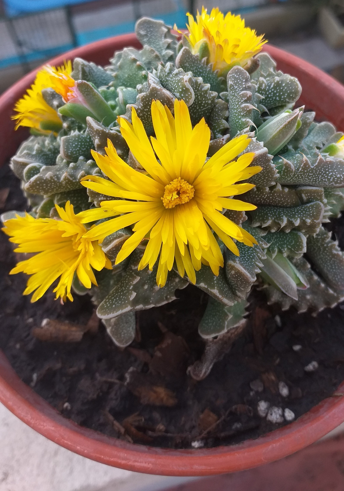
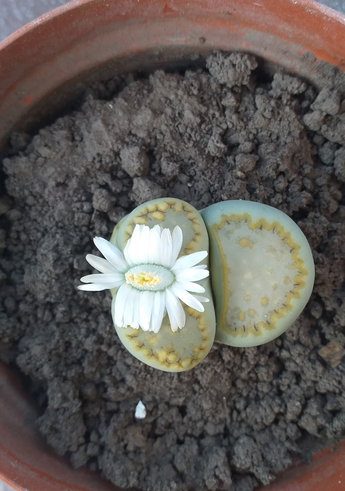

La familia comprende unas 1100 especies repartidas en 126 géneros, los que a su vez se hallan distribuidos en cinco sub-familias.

faucaria tigrina
Es una planta pequeña que puede medir hasta 15 cm de altura. Sus hojas son gruesas de forma triangular como mandíbulas de un tigre.
Tiene flores grandes de hasta 5 cm de diámetro de color amarillo. Florece en otoño.
Pleno sol,leve sombra.
Moderado,no exceder ya que puede causar enfermedades causadas por hongos.
Buen drenaje.

lithops
También conocidos como piedras vivas son plantas carnosas que consta de dos hojas divididas por una fisura de donde surgen sus flores. No suelen tener un tamaño mayor de 8 cm de ancho y unos 20 cm de extensión.
Media sombra, sin luz solar directa pero bien iluminado.
Regar una vez cada 15 a 20 días. No regar en invierno.
Buen drenaje.
 Buen drenaje.
Buen drenaje.